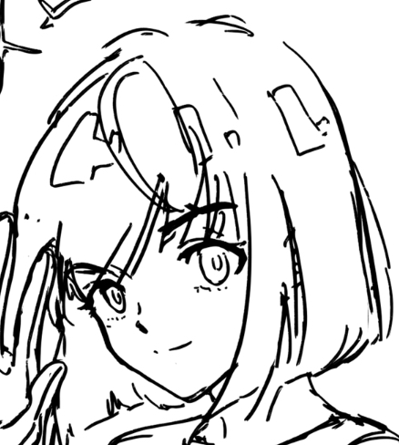

I lost my chip.
I implanted a new one. And tonight, I will sneak into Kylo’s room.
I should have waited until my hand fully recovered, but I couldn’t.
Kylo might get my chip, which conceals my physiological information. Seems like he has not yet figured out the secret with that chip. If he had, I should have been caught.
Or he did, but he does not want to catch me…?
It is not the correct time for me to imagine.
I don’t want to lose Kylo. And I don’t want to lose myself.
I know he will finish his mission and return in an hour.
I entered via the vent. Kylo has a safe deposit box in his room. I have seen it before.
The right hand still hurts when I landed on the floor.
Unlocking Kylo’s box is not difficult for me at all. I endured the pain and slowly opened it up.
As I’d hoped, the chip is inside. I feel relieved.
>>
Suddenly,I hear someone speak.
“I knew you would be here.”
He is back!
How did he come back so early?
I really had bad luck during these days.
I turned to him, thinking about my next step.
He stands at the door staring at me for a while. Then, as if resigning himself to fate, he gradually puts down the gun and throws it into the drawer.
Why? I have not done anything yet.
In the midst of my dilemma, I hear his voice.
“I know that you are here for the chip. It is important for you. ”
“I also know about your secret.”
His expressions sound friendly. Does he give up catching me?
I look into his eyes, so genuinely, but I am flustered.
Has he already known everything? Is he waiting for me to tell? Or is he trying to test me?
>>
Here comes to the time for me to make the final decision.
The vent is close. Without the threats of the gun, I could escape. But, what happens then?
If he has known who I am all this time, maybe if I just leave here, I will never see him again.
I don’t want to give up all of my efforts, but I also don’t want to leave him. Although I know he is the police who tries to catch me, I did not leave him. I even benefit from our relationship by acquiring information about his deposit box and predicting his actions during my mission.
For a long time, I’ve been deceiving him, exploiting him.
What should I do?
>>
 Tell him, “I am Mila”.
Run away.
Tell him, “I am Mila”.
Run away.